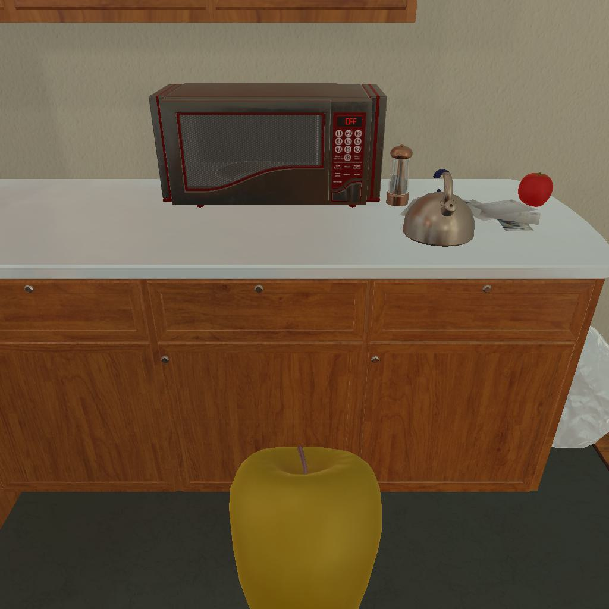
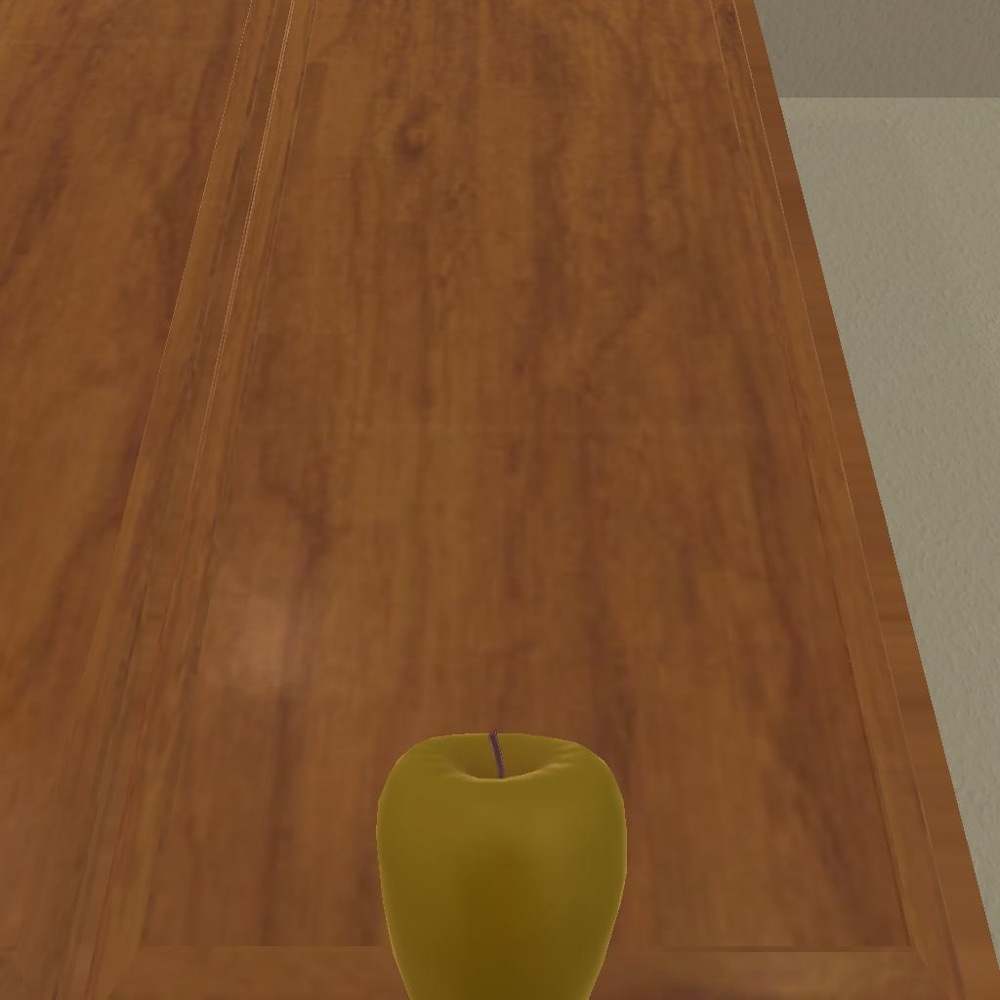

---------------------------------------------------------task: 24---------------------------------------------------------
--------------------------------------------------------------------------------------------------------------------------------------------------------------------
--------------------------------------------------------------------------------------------------------------------------------------------------------------------
Step:--------------------------------------------------------------------------19-------------------------------------------------------------------------------
----------------------------------------
VLM Prompt:
Image1:
Image2:
**Instruction**
1. Analyze the provided images to identify all visible household objects and compare the difference between images (e.h. whether the object is opened or not and taken on hand or not), focusing on those relevant to the task description "heat some tomato and put it in fridge."
2. Use the analysis of images and the task hint "The agent must find an object of the desired type, pick it up, go to a microwave, heat the object with the microwave, then find the correct location to place it, and put it down there. The agent does not need to use the microwave button or open the microwave to heat the object, and the agent just needs to do action that is "heat the object with the microwave"." to answer the question: what is the most reasonable action in the choices for the task description "heat some tomato and put it in fridge"?
3. Decide and write the answer using the template: The answer is: (i): , where i is the real number. If there is no desired object in images, search every place based on **Initial Observation** to find the object. And if no one is exactly correct, choose a similar answer.
**Initial Observation**
You are in the middle of a room. Looking quickly around you, you can see cabinet (1-14), countertop (1-2), microwave (1), drawer (1-5), sink (1), sinkbasin (1), coffeemachine (1), stoveburner (1-4), toaster (1), fridge (1), diningtable (1), garbagecan (1), safe (1)
**Answer Choices**
(1): go to cabinet 3
(2): go to countertop 1
(3): go to cabinet 5
(4): go to microwave 1
(5): go to cabinet 6
(6): go to drawer 1
(7): go to drawer 2
(8): go to drawer 3
(9): go to cabinet 7
(10): go to cabinet 8
(11): go to sink 1
(12): go to sinkbasin 1
(13): go to coffeemachine 1
(14): go to cabinet 9
(15): go to cabinet 10
(16): go to drawer 4
(17): go to cabinet 11
(18): go to stoveburner 1
(19): go to stoveburner 2
(20): go to stoveburner 3
(21): go to stoveburner 4
(22): go to cabinet 12
(23): go to toaster 1
(24): go to drawer 5
(25): go to countertop 2
(26): go to fridge 1
(27): go to cabinet 13
(28): go to cabinet 14
(29): go to diningtable 1
(30): go to garbagecan 1
(31): go to safe 1
(32): open cabinet 2
(33): close cabinet 2
(34): put apple 1 in/on cabinet 2
(35): examine apple 1
(36): examine cabinet 2
**Answer**
Let's think step by step by following the instructions.
----------------------------------------
----------------------------------------
Original Response:
First, we need to identify all visible household objects that are relevant to the task "heat some tomato and put it in fridge." In Image 1, we can see a microwave on the countertop, a kettle, a tea infuser, and an apple. In Image 2, we can see an apple in front of what seems to be cabinet doors. There is no visible tomato or fridge in both images.
Based on the task hint, we need to find a tomato, heat it in the microwave, and then put it in the fridge. Since there is no tomato in the images, we need to search for it. The initial observation lists various cabinets and drawers where a tomato could be stored.
The most reasonable action to find a tomato would be to search the cabinets, as that is a common place to store food items. Since the microwave is visible on the countertop 1, we don't need to search for it. After heating the tomato in the microwave, the next step would be to go to the fridge to store it.
Considering the provided answer choices, the most reasonable action would be to start searching the cabinets. We can eliminate actions related to the apple, the countertop where the microwave is, and other unrelated objects or actions (like going to the sink or examining the apple).
Therefore, the answer is:
(1): go to cabinet 3
----------------------------------------
----------------------------------------
>>> Refine Original VLM Response and Get Pure Action: No action
----------------------------------------
-----------------------------------------------------------------
Running time: 17.27980375289917 seconds
Total Money: 12.658920000000004
-----------------------------------------------------------------
-----------------------------------------------------------------
Text Observation:Nothing happens.
-----------------------------------------------------------------
UNSUCCEED